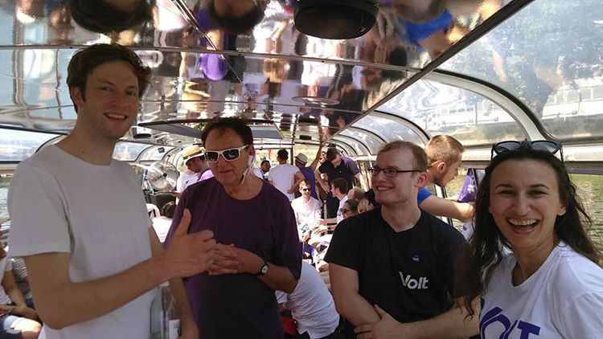

Start a Team
A network of citizen teams throughout Europe
Our movement is present in 30 European countries with city teams across the continent. We work together on a common platform, which covers European, our respective national and local level. This means that while we may still be small in some countries or often only have a few members in a city, we do have a network of many thousand active members to fall back upon, exchange ideas and help each other.
We are still learning this and finding out how we can turn our network into a real advantage for Volt. City exchanges, cross-border events, helping other countries to campaign - there are many ideas being floated that we just have to try. What we can already say today is that if you like our idea of citizens taking political responsibility and think about starting a local team: You will not be alone. There are members assisting with setting up events, creating a web presence and helping with your first activities on the ground. We do not offer an established political structure, but a flat hierarchy and passionate movement trying to support everyone showing initiative. Get in touch with us if you are interested to find out more.
Citizen Initiatives
We dream of citizens actively taking care of their communities and being represented in government. There are many ways to achieve this and we do not claim to have the only answer. Rather we would very much like to cooperate with other citizen initiatives, work on common projects and proposals and field joint candidate lists for elections. We've had local independent candidates and movements join Volt in some countries, so this is also a possibility we are happy to discuss. We sincerly hope to offer everyone enough conceptual surface to work towards the best interest of their respective communities, so it comes down to working with us and trying if our purple suits you and whether you find enough good reasons to walk with us.
What does it mean to running a local Volt team?
First and foremost it will be about growing a team and trying to introduce citizen politics on local level - creating connections with the media, contributing to other initiatives and learning more about your community. Once you have a handful of active members, a city team usually becomes more visible through learning how to contribute to the political discours, or participating in public events. After that, it depends on your objectives and the team you are building.
There is no best practice for us to grow Volt. We try to provide tools, like our community organising course, a common approach within which to operate and our network to share information on successful events, actions and policies.